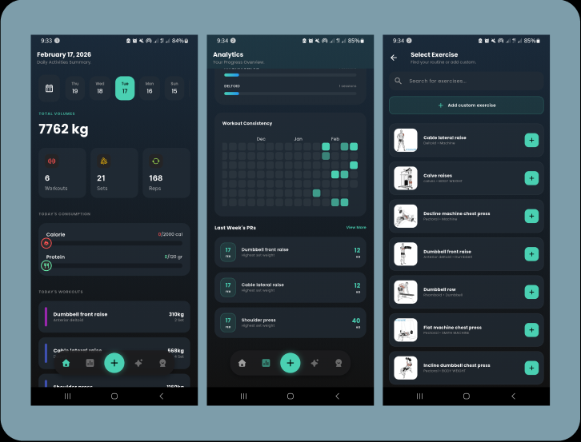
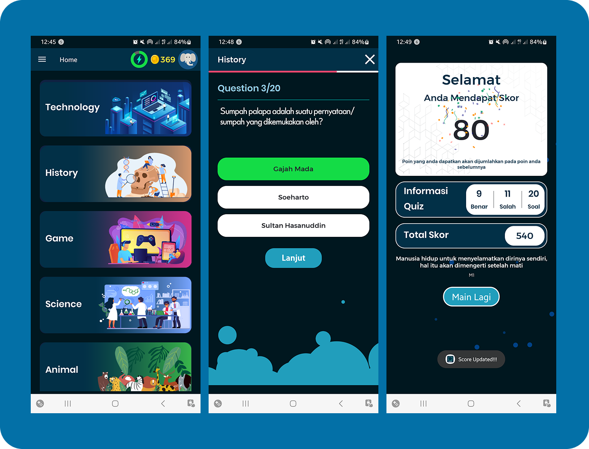
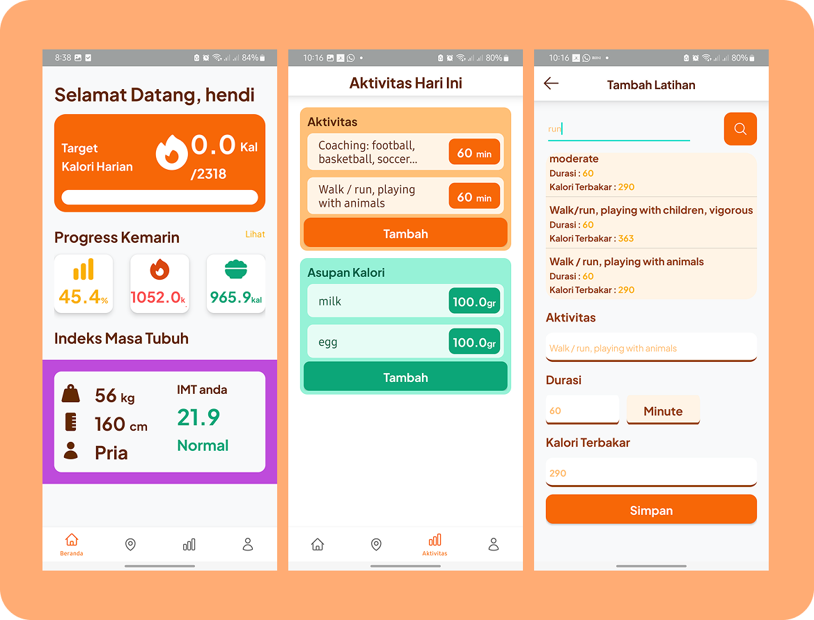
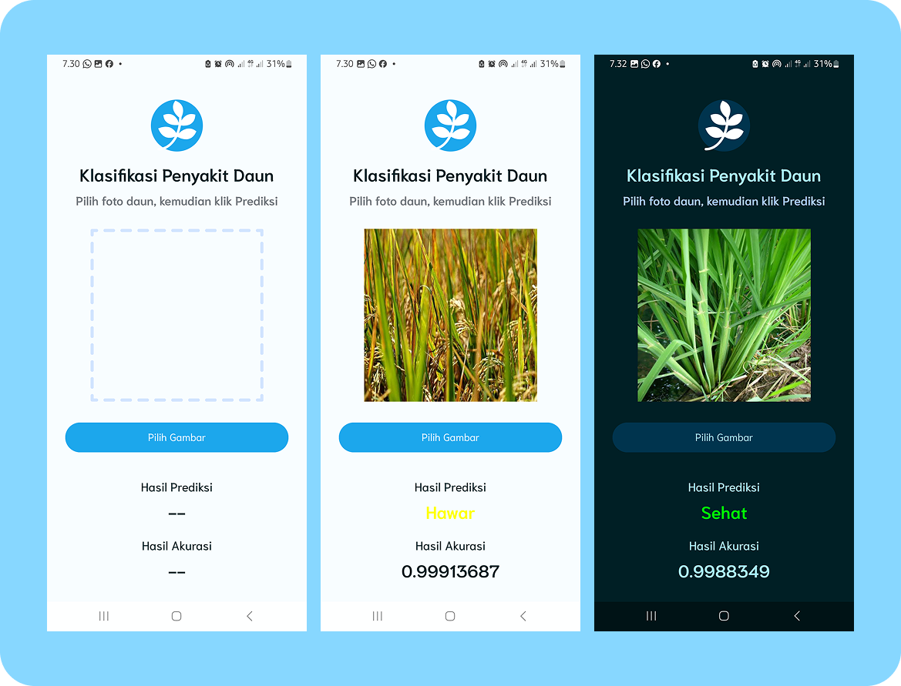
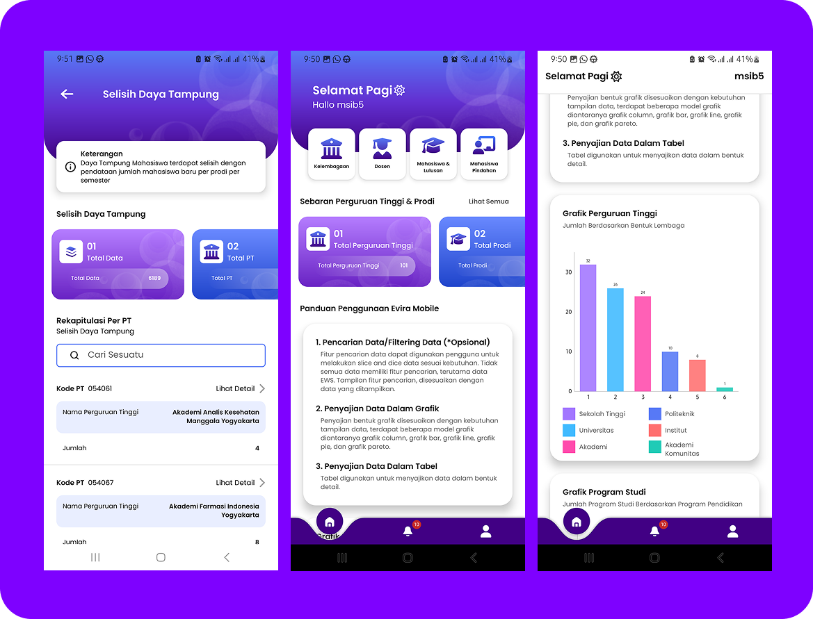
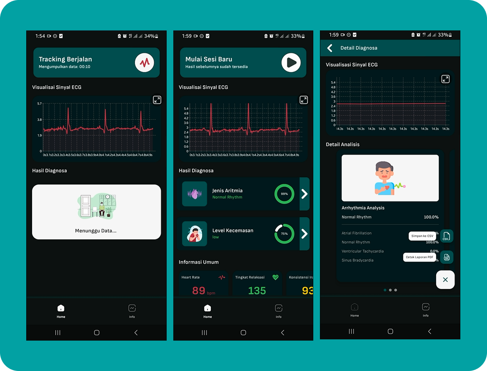

I enjoy designing clean architectures, integrating APIs, and delivering scalable, maintainable, and user-friendly software solutions. Comfortable working across mobile frameworks and exploring system configurations.
hendi@portfolio:~$ cat skills.json
["Flutter", "Nuxt.js", "Java", "Linux", "AIoT", "Firebase"]
@ Poca Group Central Java
@ BKPP Kota Semarang
@ LLDIKTI V YOGYAKARTA (MSIB BATCH 6)
@ CV. Can Creative, Semarang






Monitoring aritmia (AIoT) dan reservasi balai diklat BKPP Semarang.
[ view_source ]